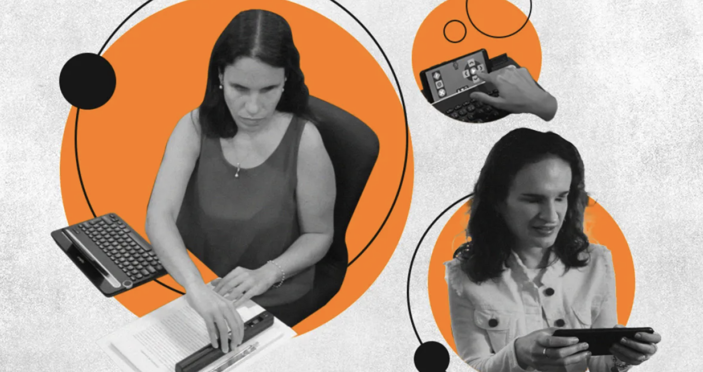

COMPUTACIÓN AVANZADA · MCD UAI
Constanza Obando
Ingeniera en Diseño de Productos, coordinadora de laboratorio de prototipado y docente de la Universidad de Los Lagos.
Perfil
- Formación
- Ingeniera en Diseño de Productos, UTFSM
- Qué hago hoy
- Coordinadora de laboratorio de prototipado y docente de la Universidad de Los Lagos
- Qué me gustaría aprender en este curso
- Todo lo que se pueda
Intereses
Una pregunta que me interesa explorar
¿Se puede recuperar la autonomía tras la pérdida de una extremidad superior?

LAB01 · ARTEFACTO DIGITAL
Modelo 3D
Arrastra para orbitar y usa la rueda, o pellizca, para acercar.
Tu navegador no puede mostrar el visor. Descargar el archivo GLB.